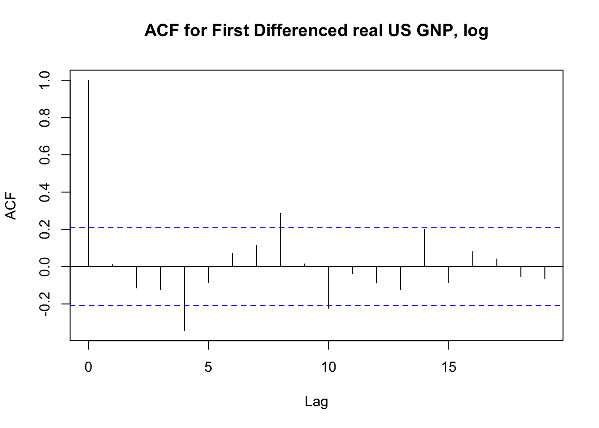

fredr interacts with the Federal Reserve Economic Data (FRED) RESTful API, provided by the Federal Reserve Bank of St. Louis. Essentially a simple wrapper of httr and the FRED API itself, fredr is designed with simplicity and flexibility in mind. The core functions are
-
fredr_series- Fetch a FRED series. -
fredr_search- Search for a FRED series. -
fredr- Send a general request to the FRED API.
All objects are returned as tibbles. As nearly all optional parameters supplied to these functions are relayed verbatim to the API, the user is strongly encouraged to read the full FRED API documentation to leverage the full power of the FRED API and fredr.
Usage
Setting the FRED API key
Load fredr and set a FRED API key in the working directory. You must first obtain a FRED API key. It is also recommended to reveiw the FRED API Terms of Use.
Search for FRED data objects
Search for FRED series
fredr_search(search_text = "unemployment")
#> # A tibble: 1,000 x 16
#> id realtime_start realtime_end title observation_sta…
#> * <chr> <chr> <chr> <chr> <chr>
#> 1 UNRATE 2018-07-08 2018-07-08 Civilian Unempl… 1948-01-01
#> 2 UNRATENSA 2018-07-08 2018-07-08 Civilian Unempl… 1948-01-01
#> 3 NROU 2018-07-08 2018-07-08 Natural Rate of… 1949-01-01
#> 4 UNEMPLOY 2018-07-08 2018-07-08 Unemployment Le… 1948-01-01
#> 5 M0892AUS… 2018-07-08 2018-07-08 Unemployment Ra… 1929-04-01
#> 6 Q0892BUS… 2018-07-08 2018-07-08 Unemployment Ra… 1940-04-01
#> 7 LNS14000… 2018-07-08 2018-07-08 Unemployment Ra… 1948-01-01
#> 8 M0892BUS… 2018-07-08 2018-07-08 Unemployment Ra… 1940-01-01
#> 9 M0892CUS… 2018-07-08 2018-07-08 Unemployment Ra… 1947-01-01
#> 10 LNU04000… 2018-07-08 2018-07-08 Unemployment Ra… 1948-01-01
#> # ... with 990 more rows, and 11 more variables: observation_end <chr>,
#> # frequency <chr>, frequency_short <chr>, units <chr>,
#> # units_short <chr>, seasonal_adjustment <chr>,
#> # seasonal_adjustment_short <chr>, last_updated <chr>, popularity <int>,
#> # group_popularity <int>, notes <chr>Retrieve a FRED series
Fetch a FRED series. Returns an xts object.
fredr_series(
series_id = "UNRATE",
observation_start = "1990-01-01"
)
#> # A tibble: 342 x 2
#> date UNRATE
#> <date> <dbl>
#> 1 1990-01-01 5.4
#> 2 1990-02-01 5.3
#> 3 1990-03-01 5.2
#> 4 1990-04-01 5.4
#> 5 1990-05-01 5.4
#> 6 1990-06-01 5.2
#> 7 1990-07-01 5.5
#> 8 1990-08-01 5.7
#> 9 1990-09-01 5.9
#> 10 1990-10-01 5.9
#> # ... with 332 more rowsLeverage the native features of the FRED API:
fredr_series(
series_id = "UNRATE",
observation_start = "1990-01-01",
frequency = "q",
units = "chg"
)
#> # A tibble: 114 x 2
#> date UNRATE
#> <date> <dbl>
#> 1 1990-01-01 -0.0667
#> 2 1990-04-01 0.0333
#> 3 1990-07-01 0.367
#> 4 1990-10-01 0.433
#> 5 1991-01-01 0.467
#> 6 1991-04-01 0.233
#> 7 1991-07-01 0.0333
#> 8 1991-10-01 0.233
#> 9 1992-01-01 0.267
#> 10 1992-04-01 0.233
#> # ... with 104 more rowslibrary(tidyverse)
library(xts)
gnpca <- fredr_series(series_id = "GNPCA", units = "log") %>%
mutate(GNPCA = GNPCA - lag(GNPCA)) %>%
filter(!is.na(GNPCA))
gnpca_xts <- xts::xts(
x = gnpca$GNPCA,
order.by = gnpca$date
)
gnpca_xts %>%
StructTS() %>%
residuals() %>%
acf(., main = "ACF for First Differenced real US GNP, log")
fredr_search(search_text = "federal funds",
order_by = "popularity",
limit = 1)$id %>%
fredr_series(series_id = .) %>%
ggplot(data = ., mapping = aes(x = date, y = FEDFUNDS)) +
geom_line()
Access API documentation
Quickly access the FRED API web documentation for any endpoint
You may also use the params option for fredr_docs to go straight to the endpoint’s Parameters section.
A list of possible endpoints is contained in the data frame fredr_endpoints
fredr_endpoints
#> # A tibble: 31 x 3
#> endpoint type note
#> <chr> <chr> <chr>
#> 1 fred/category Categories Get a category
#> 2 fred/category/children Categories Get the child categories for a s…
#> 3 fred/category/related Categories Get the related categories for a…
#> 4 fred/category/series Categories Get the series in a category
#> 5 fred/category/tags Categories Get the tags for a category
#> 6 fred/category/related_tags Categories Get the related tags for a categ…
#> 7 fred/releases Releases Get all releases of economic data
#> 8 fred/releases/dates Releases Get release dates for all releas…
#> 9 fred/release Releases Get a release of economic data
#> 10 fred/release/dates Releases Get release dates for a release …
#> # ... with 21 more rowsGeneral queries
You can also use the backbone function fredr to run more general queries against any FRED API endpoint (e.g. Categories, Series, Sources, Releases, Tags). This is also useful to return any arbitrary information as a data.frame.
fredr(endpoint = "tags/series", tag_names = "population;south africa")
#> # A tibble: 59 x 16
#> id realtime_start realtime_end title observation_sta…
#> * <chr> <chr> <chr> <chr> <chr>
#> 1 LFWA24T… 2018-07-08 2018-07-08 Working Age Popu… 2008-01-01
#> 2 LFWA24T… 2018-07-08 2018-07-08 Working Age Popu… 2008-01-01
#> 3 LFWA24T… 2018-07-08 2018-07-08 Working Age Popu… 2008-01-01
#> 4 LFWA24T… 2018-07-08 2018-07-08 Working Age Popu… 2008-01-01
#> 5 LFWA25T… 2018-07-08 2018-07-08 Working Age Popu… 2008-01-01
#> 6 LFWA25T… 2018-07-08 2018-07-08 Working Age Popu… 2008-01-01
#> 7 LFWA25T… 2018-07-08 2018-07-08 Working Age Popu… 2008-01-01
#> 8 LFWA25T… 2018-07-08 2018-07-08 Working Age Popu… 2008-01-01
#> 9 LFWA55T… 2018-07-08 2018-07-08 Working Age Popu… 2008-01-01
#> 10 LFWA55T… 2018-07-08 2018-07-08 Working Age Popu… 2008-01-01
#> # ... with 49 more rows, and 11 more variables: observation_end <chr>,
#> # frequency <chr>, frequency_short <chr>, units <chr>,
#> # units_short <chr>, seasonal_adjustment <chr>,
#> # seasonal_adjustment_short <chr>, last_updated <chr>, popularity <int>,
#> # group_popularity <int>, notes <chr>Set to_frame to FALSE to return a generic response object from a httr::GET request that can be further parsed with httr::content
library(httr)
resp <- fredr::fredr(endpoint = "series/observations", series_id = "UNRATE", to_frame = FALSE)
resp
#> Response [https://api.stlouisfed.org/fred/series/observations?series_id=UNRATE&api_key=d3ef3490ef7270cf903d07141e9e7db7&file_type=json]
#> Date: 2018-07-08 22:38
#> Status: 200
#> Content-Type: application/json; charset=UTF-8
#> Size: 79.8 kB